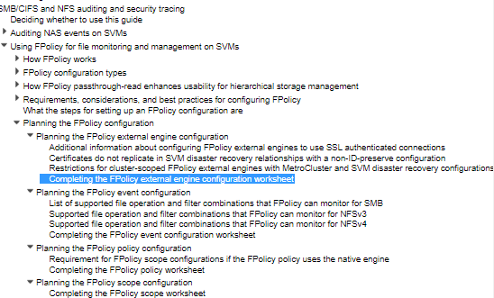

Summary: FPolicy by itself is an expensive technology. It has significant impact on I/O performance. FPolicy is a NetApp service that we simply integrate with as an event subscriber. It can be a performance-intensive feature to enable and NetApp will tell you as much. We advise a crawl/walk/run approach to avoid any impact to production services.
Issue: Enabling Fpolicy for Activity Collection can cause some performance impacts
Instructions:
Just try to explain that FPolicy is a NetApp service that we simply integrate with as an event subscriber. It can be a performance-intensive feature to enable and NetApp will tell you as much. It’s also independent of the vendor. Stealthbits and Varonis and anyone else will have similar impacts if configured similarly.
We advise a crawl/walk/run approach to avoid any impact to production services.
- Think about what your requirements are.
- Do you really need to monitor read events?
- Are there any shares or volumes you absolutely need to monitor?
- Any shares or volumes you expect to have automated processes or applications that can be excluded?
At the risk of mixing metaphors, opening the floodgates can be a valid and necessary exercise, but you don’t want to open them all at once if you don’t know how much higher the water level is on the other side of the gate.
All of the commands are in our documentation, they just have to replace with SVM names and scope of events to screen for and locations to monitor they need. They may not know where to start though. NetApp has “worksheets” in the sub-nodes of this documentation that’ll help you / them guide what kind of a configuration they want.
Planning the FPolicy configuration - https://docs.netapp.com/ontap-9/index.jsp?topic=%2Fcom.netapp.doc.dot-cifs-nfs-audit%2FGUID-DDFB957B-CE0F-4603-9629-669653B1E922.html&cp=13_4_2_5

Product: Stealthbits Activity Monitor
Module: File Activity Monitor
Versions: 3.0+